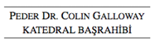

82. BÖLÜM
Washington Ulusal Katedrali dünyadaki altıncı büyük katedraldir ve otuz katlı bir gökdelenden daha yüksektir. İki yüz vitray pencere, elli üç çan ve 10,647 tane borusu olan bir kilise orgu bulunan bu Gotik şaheser, aynı anda üç binden fazla inananı barındırabilir.
Ama bu akşam büyük katedral boştu.
Peder Colin Galloway -katedralin başrahibi- ezelden beri yaşıyormuş gibi görünüyordu. Solgun teniyle tezat oluşturan bir cüppe giymiş olan peder, iki büklüm bedenine rağmen, tek kelime etmeden ayaklarını yerde sürüyerek ilerledi. Langdon ile Katherine, optik yanılsama yaratmak için hafifçe sola kıvrılan yüz yirmi metre uzunluğundaki ana koridorun karanlığında onu takip ettiler. Büyük Çarmıh’a geldiklerinde başrahip onları ara perdeden -halkın oturduğu kısımla arkadaki mabedi birbirinden ayıran sembolik bölme- geçirdi.
Kilisenin mihrabı buhur kokuyordu. Sadece tepedeki yapraksı tonozlardan kıvrılarak inen ışığın aydınlattığı bu kutsal yer loştu. İncil’de geçen olayları tasvir eden süslemelerin bulunduğu yan kemerlerin tepesinde elli eyaletin bayrakları asılıydı. Bu yolu kalbine kazıdığı anlaşılan başrahip Galloway, yürümeye devam etti. Langdon bir an için, Sina Dağı’ndan on taşın gömülü olduğu sunağa gittiklerini sandı, ama yaşlı peder sola dönüp, yan bloka açılan gizli bir kapıyı el yordamıyla buldu.
Kısa bir koridordan yürüdükten sonra üzerinde pirinç isim levhası bulunan bir ofis kapısının önüne geldiler.

Kapıyı açıp, ışıkları yakan Galloway’in misafirleri için böyle bir nezakette bulunmayı unutmadığı anlaşılıyordu. Onları içeri alarak kapıyı kapattı.
Başrahibin ofisi; yüksek kitap raşarı, bir masası, oymalı bir gardırobu ve özel bir banyosu olan küçük ama şık bir odaydı. Duvarda on altıncı yüzyıl goblenleriyle pek çok dini resim vardı. Yaşlı başrahip, masasının karşısındaki iki deri sandalyeyi gösterdi. Katherine’le birlikte oturan Langdon, sonunda ağır çantasını yere bıraktığı için minnet duyuyordu.
Rahat sandalyeye yerleşen Langdon, sığınak ve cevaplar, diye düşündü.
Masasının arkasında ayaklarını sürüyen yaşlı adam, arkası yüksek sandalyesine kendini bıraktı. Ardından, yorgun bir iç çekişle başını kaldırdı ve perdeli gözlerini boş bakışlarla onlara çevirdi. Ama konuştuğunda sesi beklenmedik derecede berrak ve güçlüydü.
Yaşlı adam, “Daha önce karşılaşmadığımızın farkındayım,” dedi. “Ama her ikinizi de tanıyor gibiyim.” Bir mendil çıkarıp ağzının kenarlarını sildi. “Profesör Langdon, bu katedralin sembolizmiyle ilgili yazdığınız o usta makale de dahil olmak üzere yazılarınızı biliyorum. Ve Bayan Solomon, ağabeyiniz Peter ile ben yıllardır mason kardeşiyiz.”
Katherine, “Peter’ın başı dertte,” dedi.
“Bana da böyle söylendi.” Yaşlı adam içini çekti. “Ve size yardım edebilmek için elimden gelen her şeyi yapacağım.”
Langdon başrahibin parmağında mason yüzüğü görmemişti, ama pek çok masonun, özellikle de din adamı olanların, üyeliklerini ifşa etmemeyi seçtiklerini biliyordu.
Konuşmaya başladıktan sonra Başrahip Galloway’in, Warren Bellamy’den bu akşamki olayların bir kısmını öğrendiği anlaşıldı. Langdon ile Katherine ona hikâyenin geri kalanını anlattıktan sonra, başrahip daha da endişeli görünmeye başladı.
Başrahip, “Peki, sevgili Peter’ı kaçırdığını iddia eden bu adam, piramidin şifresini Peter’ın hayatı karşılığında deşifre etmenizi mi istiyor?” diye sordu.
Langdon, “Evet,” dedi. “Bunun onu Antik Gizemlerin saklandığı yere götürecek olan bir harita olduğuna inanıyor.”
Başrahip, ürkütücü mat gözlerini Langdon’a çevirdi. “İfadenizden sizin böyle şeylere inanmadığınızı hissettim.”
Langdon bu konuda vakit kaybetmek istemiyordu. “Benim neye inandığım önemli değil. Peter’a yardım etmemiz gerekiyor. Piramidi deşifre ettik ama hiçbir yeri işaret etmiyor.”
Yaşlı adam oturduğu yerde doğruldu. “Piramidi deşifre mi ettiniz?”
Söze giren Katherine, Bellamy’nin uyarılarına ve ağabeyinin Langdon’dan paketi açmamasını istemesine rağmen, önceliğinin ağabeyine yardım etmek olduğu düşüncesiyle, bunu kendisinin yaptığını açıkladı. Başrahibe altın kapak taşını, Albrecht Dürer’in sihirli karesini ve on altı harşi mason şifresinden Jeova Sanctus Unus sözünü nasıl elde ettiklerini anlattı.
Başrahip, “Sadece bunu mu söylüyor?” diye sordu. “Tek bir Tanrı?”
Langdon, “Evet efendim,” diye cevap verdi. “Görünüşe bakılırsa piramit, coğrafi değil mecazi bir harita.”
Başrahip ellerini uzattı. “Bir dokunayım.”
Langdon çantasının fermuarını açıp piramidi çıkardı ve dikkatle masanın üstünde pederin tam karşısına koydu.
Yaşlı adamın zayıf elleri piramidin her noktasını -yazıların olduğu yüzü, pürüzsüz tabanı ve kesilmiş tepesini- incelerken Katherine ile Langdon onu seyrettiler. Bitirdiğinde ellerini yeniden uzattı. “Peki ya kapak taşı?”
Langdon küçük taş kutuyu çıkartıp masanın üstüne koydu ve kapağını açtı. Sonra kapak taşını yaşlı adamın bekleyen ellerine verdi. Aynı şekilde incelemeye koyulan başrahibin, kapak taşının her bir noktasını hissederken, küçük harşi yazıyı okumakta zorlandığı anlaşılıyordu.
Langdon, “Sır Düzen’in içinde gizli,” dedi. “Ve düzen kelimesinin başharfi büyük.”
Kapak taşını piramidin üstüne el yordamıyla yerleştiren yaşlı adamın yüzü ifadesizdi. Sanki dua ediyormuş gibi bir süre durdu ve avuçlarını defalarca piramidin yüzeyinde gezdirdi. Sonra uzanıp, küp şeklindeki kutuyu eline aldı ve parmaklarıyla içini dışını yoklayarak dikkatle inceledi.
Bitirdiğinde kutuyu elinden bırakıp, sandalyesinde geriye yaslandı. Sesi birden ciddileşerek, “Peki,” dedi. “Neden bana geldiniz?”
Soru Langdon’ı hazırlıksız yakalamıştı. “Efendim, buraya geldik, çünkü siz gelmemizi söylediniz. Ayrıca Bay Bellamy size güvenmemiz gerektiğini söyledi.”
“Peki siz ona güvenmediniz mi?”
“Anlayamadım?”
Başrahibin beyaz gözleri doğrudan Langdon’a bakıyordu. “Kapak taşının içinde bulunduğu paket mühürlüydü. Bay Bellamy size açmamanızı söyledi ama siz açtınız. Size paketi açmamanızı Peter Solomon da söylemişti. Ama açtınız.”
Katherine, “Bayım,” diye konuşmaya başladı. “Ağabeyime yardım etmeye çalışıyorduk. Onu elinde tutan adam bize piramidi deşifre...”
Başrahip, “Bunu anlayabiliyorum,” diye itiraz etti. “Peki ama paketi açmakla elinize ne geçti? Hiçbir şey. Peter’ı kaçıran adam belirli bir yer arıyor ve Jeova Sanctus Unus onu tatmin etmeyecek.”
Langdon, “Size katılıyorum,” dedi. “Ama ne yazık ki piramidin tüm söylediği bu. Daha önce de belirttiğim gibi, harita daha çok simgesel...”
Başrahip, “Yanılıyorsunuz profesör,” dedi. “Tıpkı Antik Gizemler gibi bu haritanın da katmanları var. Gerçek sırrını hâlâ çözemediniz.”
Langdon, “Başrahip Galloway,” dedi. “Piramitle kapak taşının her bir karesini inceledik, görecek başka bir şey kalmadı.”
“Şu anki haliyle kalmadı, doğru. Ama nesneler değişirler.”
“Anlayamadım?”
“Profesör, bildiğiniz gibi bu piramit mucizevi bir dönüşüm gücü vaat ediyor. Efsaneye göre bu piramit şeklini değiştirebilir... sırlarını açıklamak için fiziki şeklini başka bir hale sokabilir. Excalibur’ı65 Kral Arthur’un ellerine teslim eden ünlü kaya gibi, Mason Piramidi de eğer kendisi uygun görürse... şeklini değiştirip, layık olana sırlarını açıklayabilir.”
Langdon, yaşlı adamın geçen seneler yüzünden mantığını kaybettiğini düşündü. “Efendim, yanlış anlamadıysam siz, bu piramidin gerçek anlamda bir değişim geçireceğini mi söylüyorsunuz?”
“Profesör, elimi uzatıp bu piramidi gözlerinizin önünde değiştirebilseydim, gördüğünüz şeye inanır mıydınız?”
Langdon nasıl cevap vereceğini bilemiyordu. “Sanırım başka seçeneğim kalmazdı.”
“Tamam öyleyse. Şimdi bunu yapacağım.” Ağzını yeniden kuruladı. “Bir zamanlar en akıllı insanların bile dünyayı düz kabul ettiğini size hatırlatmama izin verin. Çünkü eğer dünya yuvarlak olsaydı, okyanuslar dökülürdü. ‘Hayır, dünya küre şeklindedir, yalnız görünmeyen, esrarengiz bir güç her şeyin yüzeye tutunmasını sağlar,’ deseydiniz, bir düşünün sizinle nasıl alay ederlerdi.”
Langdon, “Yerçekiminin varlığıyla, nesnelerin elinizin dokunuşuyla başkalaşım geçirmesi arasında fark var,” dedi.
“Var mı? Göremediğimiz ya da anlayamadığımız ‘gizemli’ güçlerin hâlâ ciddiye alınmadığı karanlık çağlarda yaşıyor olamaz mıyız? Tarih bize bir şey öğrettiyse o da bugün alaya aldığımız garip düşüncelerin bir gün kabul edilen gerçeklere dönüştüğüdür. Bu piramidi parmağımın dokunuşuyla değiştirebileceğimi söylüyorum ve siz benim aklımdan şüphe ediyorsunuz. Bir tarihçiden daha fazlasını beklerdim. Tarih, hep aynı şeyi söyleyen büyük dehalarla doludur... Bu büyük dehalar, insanın, farkında olmadığı gizemli yeteneklere sahip olduğu konusunda ısrar ederler.”
Langdon başrahibin haklı olduğunu biliyordu. Ünlü Hermetik özdeyiş şunu söylüyordu: Sizler Tanrı olduğunuzu bilmez misiniz? Bu ifade Antik Gizemlerin temel direklerinden biriydi. Yukarıdaki aşağıdakine, aşağıdaki yukarıdakine benzer... İnsan, Tanrı’nın suretinden yaratılmıştır... Tanrılaşma. İnsanın ilahi olduğu -gizli potansiyeli- mesajı sayısız inancın eski metinlerinde tekrar edilirdi. Kitabı Mukaddes bile Zebur 86:2’de sizler ilahsınız, diyordu.
Yaşlı adam, “Profesör,” dedi. “Pek çok eğitimli insan gibi, sizin de dünyalar arasında sıkıştığınızı görüyorum; bir ayağınız ruhani, bir ayağınız ise fiziki dünyada. Kalbiniz inanmak istiyor... ama zekânız buna izin vermeyi reddediyor. Bir akademisyen olarak, tarihin büyük dehalarından ders alacak irfana sahipsiniz.” Durup, boğazını temizledi. “Yanlış hatırlamıyorsam, tarihteki büyük dehalardan biri: ‘Bize akıl ermez gelen, gerçekte var. Doğanın sırlarının ardında, anlaşılmaz, soyut ve açıklanamaz bir şey duruyor. Anlayabileceğimiz her şeyin ötesindeki bu güce hürmet etmek benim dinimdir,’ demişti.”
Langdon, “Bunu kim söylemiş?” diye sordu. “Gandhi mi?”
Katherine, “Hayır,” dedi. “Albert Einstein.”
Katherine Solomon, Einstein’ın yazdığı her bir kelimeyi okumuş ve bir gün toplulukların da aynı şeyleri hissedeceğini düşünmekle birlikte, onun esrarengiz olana gösterdiği saygı karşısında büyülenmişti. Einstein, geleceğin dini, kozmik bir din olacak. Bu din, teoloji ve dogmalardan uzak durup, kişisel Tanrı’ya üstün gelecek, diye tahminde bulunmuştu.
Robert Langdon bu fikri kabullenmekte güçlük çekiyor gibiydi. Katherine onun, yaşlı peder yüzünden uğradığı hayal kırıklığının arttığını hissediyor ve ona hak veriyordu. Ne de olsa buraya kadar cevapları bulmak için gelmişler, ama elinin dokunuşuyla nesneleri değiştirebileceğini iddia eden kör bir adam bulmuşlardı. Buna rağmen yaşlı adamın gizemli güçlere karşı duyduğu güçlü tutku, Katherine’e ağabeyini hatırlatıyordu.
Katherine, “Peder Galloway,” dedi. “Peter’ın başı dertte. CIA peşimizde. Ve Warren Bellamy yardım etmeniz için bizi size gönderdi. Bu piramidin ne dediğini veya nereyi işaret ettiğini bilmiyorum, ama onu deşifre etmek Peter’ı kurtaracağımız anlamına geliyorsa bunu yapmalıyız. Bay Bellamy de ağabeyimin hayatını bu piramit için feda etmiş olabilir ama benim ailem bu yüzden acıdan başka bir şey yaşamadı. Sakladığı sır her ne ise bu gece sona erecek.”
Yaşlı adam korkutucu bir ses tonuyla, “Haklısınız,” dedi. “Her şey bu gece sona erecek. Bunu garantilediniz.” İçini çekti. “Bayan Solomon, o kutunun mührünü kırdığınızda, geri dönüşü olmayan bir dizi olayı başlattınız. Bu gece henüz farkında olmadığınız bazı güçler devrede. Geri dönüşü yok.”
Katherine sersemlemiş bir halde pedere bakıyordu. Sanki Vahyin Yedi Mührü’nden veya Pandora’nın Kutusu’ndan bahsedermiş gibi kederle konuşuyordu.
Langdon araya girip, “Saygısızlık etmek istemem efendim,” dedi. “Taş bir piramidin herhangi bir şeyi nasıl başlatacağını hayal edemiyorum.”
“Elbette edemezsiniz profesör.” Yaşlı adam kör gözlerle ona bakıyordu. “Henüz bunu görecek gözlere sahip değilsiniz.”
65 Kral Arthur’un efsanevi kılıcı.